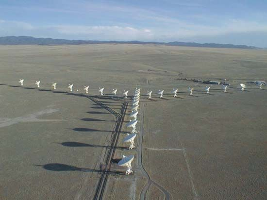
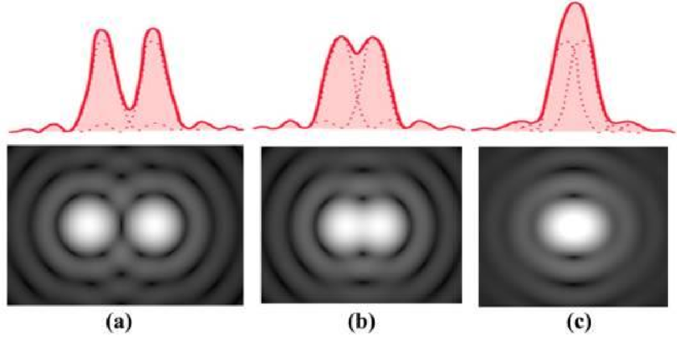
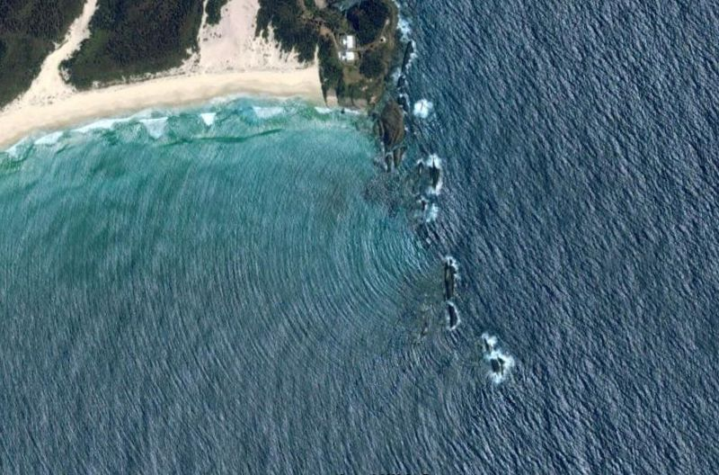
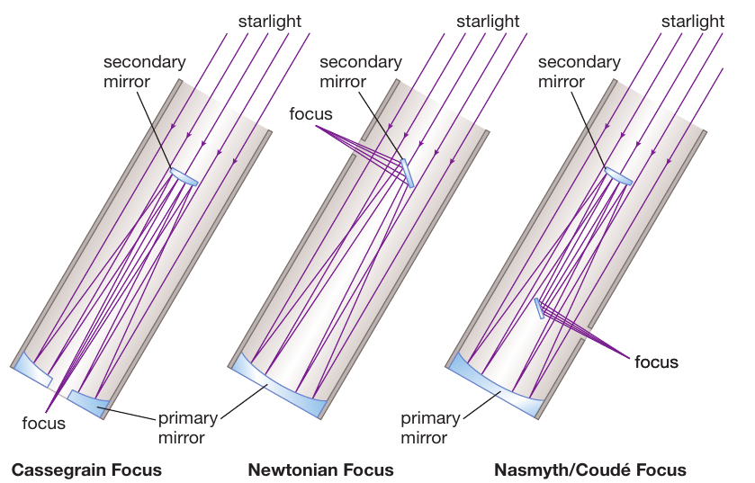
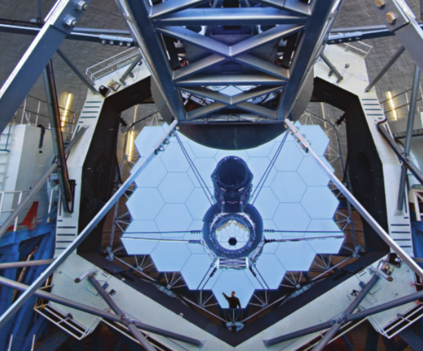
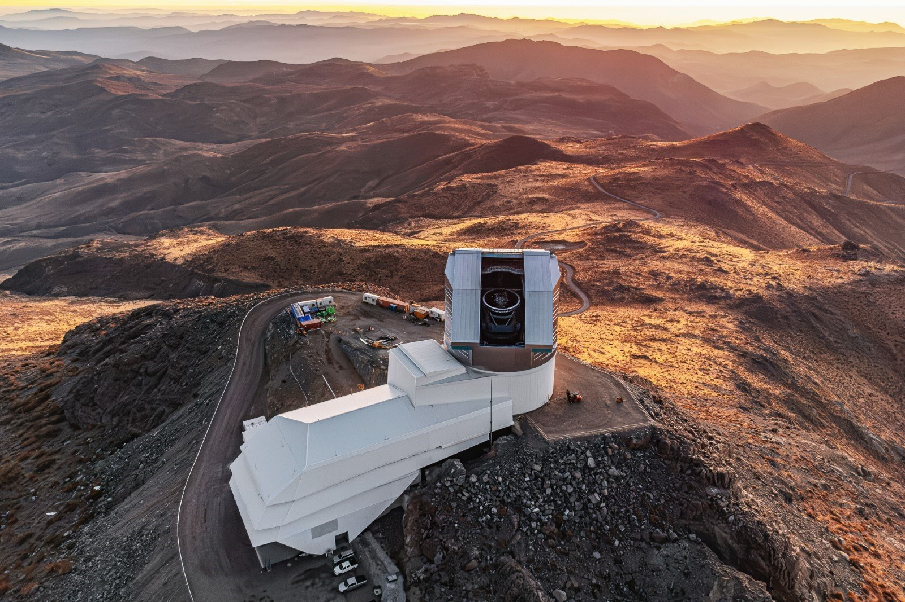
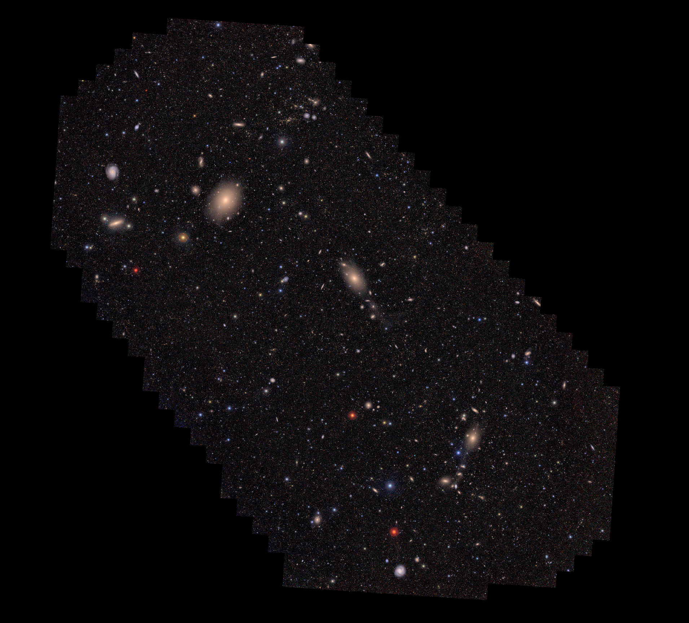
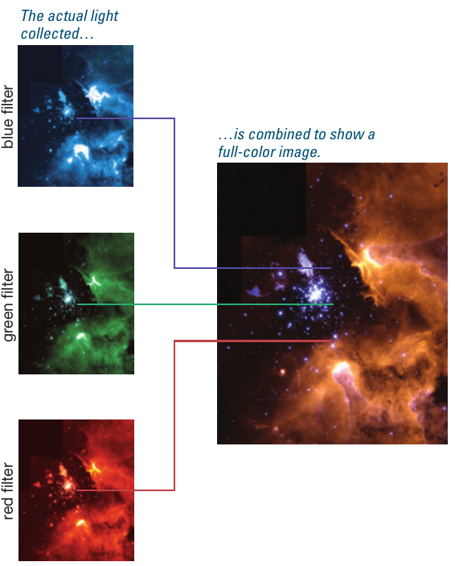

Recap & Logistics
- end of today: mini-practice round + top-hat test
- Wednesday: handout from lab 2 due + midterm exam (Neev will be here)
- Next week: Neev will give a lecture on the solar system on monday. Wednesday lecture is canceled (I will be traveling to a workshop on stellar winds)
The most important qualities of telescopes
Because their primary goal is to funnel photons to a detector, the two most important properties of a telescope are its collecting area and its spatial resolution.
Collecting area
The bigger the telescope, the more light it can collect: this is why for the optical wavelengths ∼380-700nm, we went from the hand-held telescope built by Galileo to present-day 10m-scale telescopes and are currently building the next generation 30m-scale telescopes!
Note that what matters is the collecting area: this has the dimensions of [L2], and scales with the square of the size! So a telescope that is 30m in scale, 3 bigger than the current biggest telescopes, will have a collecting area 32=9 times larger!
This enables several things like:
- seeing fainter objects (either intrinsically fainter or just because they are farther away);
- be able to take spectra of fainter sources, since we get more photons at all wavelengths;
- having to stay "on-source" for shorter times to get the same quality of the signal: this allows for more observations per night.
For non-optical wavelengths, telescopes can be much bigger! Consider, for example, long-wavelength radio-waves: any detail of the detector much smaller than the wavelength \(\lambda\) will not matter for the detection of the photon. This way we can make telescope dishes that are not full, and even start combining multiple dishes into a single telescope

Spatial resolution
The more photons we can collect, the better, but we also need to be able to know where they come from. If two sources are too close to each other (in projection on the celestial sphere), we will see them as a single "unresolved" point source.

The minimum angular distance between two sources that can be distinguished depends on the wavelength of the light emitted by these sources, and the telescope itself.
Remember that light is a wave, thus subject to wave phenomena like diffraction:

Light encounters the telescope and can be modified by it: this will generate spurious signals in your detector that are not carried by the light from its source that you want to study, but instead imprinted on light by the telescope itself. The so-called diffraction limit of a telescope thus depends on the wavelength of the light \(\lambda\) and its size \(D\): any angular size \(\theta\) smaller than
cannot be resolved. So increasing \(D\) leads to collecting more light (\(\proto D^{2}\)) and pushing down the diffraction limit (\(\propto D^{-1}\)).
Telescope designs
Cutting edge telescopes usually push the boundaries of technology to allow for unprecedented capabilities. Nevertheless, in the past 400 years of telescope building, we have collectively developed some standard architecture that are more common than others.
Typically, one would want the detectors to which light is funneled to be in the focal plane, but that can be hard to achieve (the detector itself gets in the way). Sometimes light is funneled into fiber optics to then carry it from the telescope focus to the instrument.
Refracting telescope
We have already discussed the role of the lens in a telescope, which is an optical element that "bends" the light through refraction.
The first telescopes made by the dutch and studied and understood by Galileo where like this.
However, these may introduce effects on the light such as "chromatic aberration": each wavelength of light is bent by a slightly different amount, and so white light gets always spread into small rainbows.
Reflecting telescopes
One can do away with the lens and achieve focusing by combining mirrors. This creates an optical path for light from the stars (note that these are typically infinitely far compared to the size \(D\) of the telescope, therefore starlight rays are all parallel to each other), which has to converge on the focus.
The figure shows some classic design that were originally developed for eye-piece observations (putting the eye at the focus). Note how there is a combination of 2+ mirrors that need to be fine-tuned perfectly to obtain sharp images


Using telescopes
We have already seen that telescopes funnel the light to detectors, and that there are two kind of sensors (to collect light regardless of its wavelength within a wide range and do photometry, and to spread the light as a function of its wavelength/energy and do spectroscopy, cf. the second lab we did in class).
Photometry and spectrometry are two main tasks that can be performed by astronomers at a telescope. This usually requires applying for telescope time and for the specific detector one wants (there are more astronomers than professional-grade observatories, so it's very often a competitive process to get a chance to use a telescope), either doing the observations one-self, or receive the observed data from the telescope operators on a mountain, and then analyzing them and do research.
N.B.: Especially post-covid19, lots of observatories are now "robotic" and/or operated remotely only. This minimizes the need for humans at remote mountain sites, but more importantly it allows for optimizing the schedule of the telescope and maximizing the number of sources that can be observed in a night.
There is a third thing that can be done with telescopes – typically with medium and small scale ones: repeat observations every night. This is not different than what Chinese and Korean medieval astronomers were doing! This allows to find changes in the night sky, the study of which is often called "time-domain astronomy"

The Vera Rubin telescope has started performing the "Legacy survey of Space and Time" (LSST) which is based on scanning the entire sky visible from the telescope (so half the sky, the other half being below the Earth from the telescope point of view) every few days with the same filters. This has already produced incredible images that are so high-resolution that they cannot be displayed in their full glory on consumer displays!
You can find an interactive tool to explore Rubin/LSST first image here (you may need to scroll to the left to find the observed field!), that allows you to "zoom in and enhance" like in movies!

Composite Images

Midterm mini-practice
See top hat.